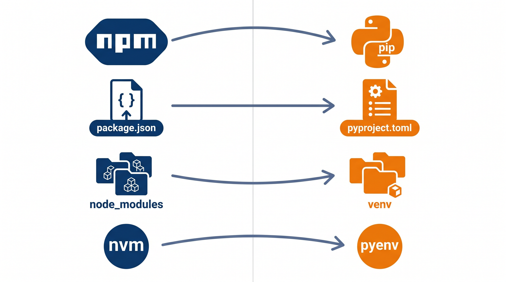
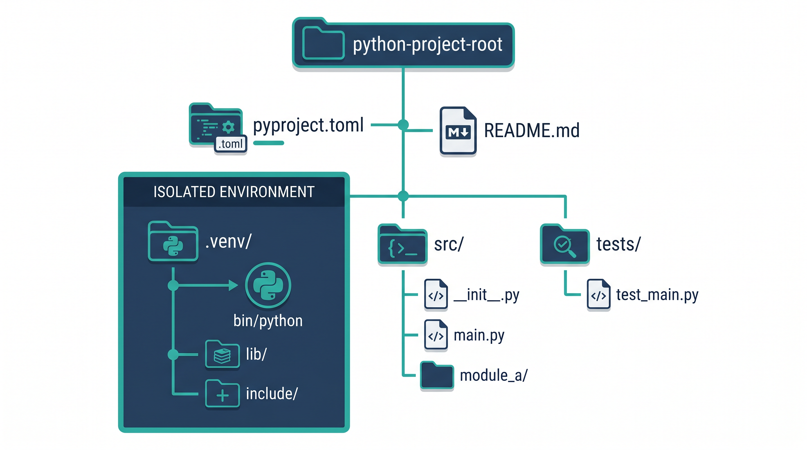

为什么"够用"就够了
你写 JavaScript / TypeScript 每天都很顺手。React 组件、API 路由、状态管理——这些是你的主场。
但在 AI 时代，越来越多项目开始混入 Python 后端。AI 给你生成了一段 FastAPI 路由，或者一个 Pydantic model，你打开一看——能认个大概，但又不敢改。
你不是要去当 Python 专家。你只需要一个"翻译层"——把你已经会的，转成 Python 语境下能理解的东西。
这本小册子就是干这个的。不是教程，不是手册。是一份对照表 + 场景指南，帮你：
✅ 看懂 AI 写的 Python 代码
✅ 理解 Python 项目的目录结构
✅ 会装依赖、配环境、启动服务
✅ 能定位和排查常见问题
1 心智模型转换：JS/TS → Python
这一章用最少的代码，把你脑子里 JS/TS 的概念「翻译」成 Python。看完以后你读 AI 生成的 Python 代码就不需要一直查了。
变量与基础类型
let name = "Alice";
const age = 30;
let price = 9.9;
let isDone = false;
let nothing = null;name = "Alice"
age = 30
price = 9.9
is_done = False
nothing = Nonelet/const，直接赋值。布尔值是 True/False（大写！）。没有 null，只有 None。输出 & 字符串
console.log("Hello");
const msg = `Hi ${name}`;print("Hello")
msg = f"Hi {name}"Python 用 print() 而非 console.log()。模板字符串是 f-string，写法是 f"..."，比 JS 模板字面量更简洁。
列表（数组）和字典（对象）
const items = [1, 2, 3];
items.push(4);
items.map(x => x * 2); // [2,4,6]
items.filter(x => x > 1); // [2,3]
const obj = {name: "Alice", age: 30};
obj.name; // "Alice"items = [1, 2, 3]
items.append(4)
[x * 2 for x in items] # [2,4,6,8]
[x for x in items if x > 1] # [2,3,4]
obj = {"name": "Alice", "age": 30}
obj["name"] # "Alice".append() 不是 .push()。没有 .map()/.filter()——改用列表推导式（list comprehension），AI 代码里到处都是这个。函数
function add(a, b) {
return a + b;
}
const greet = (name) => {
return `Hello ${name}`;
};def add(a, b):
return a + b
def greet(name):
return f"Hello {name}"没有花括号，缩进就是代码块。没有分号。用 def 而不是 function 或 =>。
类与 this/self
class Dog {
constructor(name) {
this.name = name;
}
bark() {
console.log(this.name);
}
}class Dog:
def __init__(self, name):
self.name = name
def bark(self):
print(self.name)构造函数叫 __init__（双下划线），self 必须显式写在每个方法的第一个参数——不是隐式的。
异步
async function fetchData() {
const res = await fetch(url);
return res.json();
}async def fetch_data():
async with httpx.AsyncClient() as client:
res = await client.get(url)
return res.json()概念几乎一样：async def 对应 async function，await 完全同义。
导入
import React from 'react';
import { useState } from 'react';
import * as utils from './utils';import os
from datetime import datetime
from .utils import helper
import numpy as npimport X — 导入整个模块。from X import Y — 只取一个东西。import numpy as np — 别名。
对比速查表
| 概念 | JavaScript / TS | Python |
|---|---|---|
| 变量声明 | let x = 1 | x = 1 |
| 常量 | const X = 1 | 约定大写 X = 1（不强制） |
| 打印 | console.log() | print() |
| 字符串插值 | `Hello ${name}` | f"Hello {name}" |
| 严格相等 | === | ==（Python 本身就是严格相等） |
| 数组末尾加 | .push(x) | .append(x) |
| 数组 map / filter | .map(fn) / .filter(fn) | 列表推导式 [f(x) for x in...] |
| 空值 | null / undefined | None |
| 布尔 | true / false | True / False |
| 函数 | function f() {} / () => {} | def f(): |
| 构造函数 | constructor() | __init__(self) |
| this | this | self |
| 异步函数 | async function | async def |
| 代码块 | {} | 缩进（4空格） |
| 语句结束 | ; | 换行 |
2 环境与工具链
这一章把 Node.js 生态和 Python 生态放一起对照。看完你知道每个工具的对应关系，不会再被 pip、venv 这些词吓到。

核心对照表
| 做什么 | JS / Node | Python |
|---|---|---|
| 运行时 | node | python3 |
| 版本管理 | nvm | pyenv |
| 包管理器 | npm / pnpm | pip |
| 现代包管理器 | pnpm | uv（更快，推荐） |
| 项目配置 | package.json | pyproject.toml |
| 依赖安装位置 | node_modules/ | .venv/lib/site-packages/ |
| 运行单文件 | node script.js | python3 script.py |
| 运行模块 | npx jest | python3 -m pytest |
| 环境变量 | .env + dotenv | .env + python-dotenv |
虚拟环境（venv）—— 最重要的一课
node_modules 是项目级别的——每个项目有自己的 node_modules，互不影响。
Python 的 pip 默认是全局安装的，所以你需要手动创建一个隔离环境——这就是 venv。它就像一个 per-project 的干净沙盒，里面有自己的 Python 和 site-packages。
# 创建虚拟环境（只在第一次做）
python3 -m venv .venv
# 激活——激活后 pip 安装的东西都在 .venv 里
source .venv/bin/activate # macOS / Linux
# 现在可以安全安装了
pip install fastapi uvicorn
# 退出虚拟环境
deactivatepython3 而不是 python。同理 pip3 而不是 pip。或者统一用 python3 -m pip 最安全。pyproject.toml —— 相当于 package.json
现代 Python 项目的配置中心。定义项目元信息、依赖、工具配置。
# pyproject.toml
[project]
name = "my-backend"
version = "0.1.0"
requires-python = ">=3.11"
dependencies = [
"fastapi>=0.115.0",
"uvicorn[standard]",
"pydantic>=2.0",
]
uv —— 新一代包管理器（比 pip 快 10-100 倍）
如果你看到项目里有 uv.lock 或 README 里写着 uv sync，别慌。uv 就是 Python 世界的 pnpm——更快、更现代，正在取代 pip。
# 安装 uv（只需要做一次）
curl -LsSf https://astral.sh/uv/install.sh | sh
# 进入一个有 pyproject.toml 的项目，一键装好所有依赖
uv sync
# 运行脚本（自动用项目的虚拟环境）
uv run python3 main.py
uv run uvicorn main:app --reload
# 添加新依赖
uv add fastapi httpxuv sync 就等于 pip install -r requirements.txt。看到 uv run 就等于先激活 venv 再运行。就这么简单。requirements.txt —— 老项目的依赖清单
新项目用 pyproject.toml，但大量现有项目（和很多 AI 生成的项目）还是用 requirements.txt。格式就是每行一个包名：
# requirements.txt
fastapi>=0.115.0
uvicorn[standard]
pydantic>=2.0
httpx
# 安装方式
pip install -r requirements.txt
# 或者用 uv
uv pip install -r requirements.txtDocker —— 5 行看懂 Dockerfile
AI 生成的项目经常带 Dockerfile。你不需要精通 Docker，但要能看懂它在干嘛：
FROM python:3.11-slim # 基础镜像：Python 3.11 精简版
WORKDIR /app # 工作目录
COPY requirements.txt . # 先复制依赖文件（利用 Docker 缓存）
RUN pip install -r requirements.txt # 安装依赖
COPY . . # 复制项目代码
CMD ["uvicorn", "main:app", "--host", "0.0.0.0", "--port", "8000"] # 启动命令看到 docker-compose.yml 也别怕——它就是把多个 Docker 容器编排在一起。运行 docker compose up 就能把整个项目跑起来。
# docker-compose.yml 最常见的结构
services:
web: # Python 后端
build: .
ports:
- "8000:8000"
db: # 数据库
image: postgres:16
environment:
POSTGRES_PASSWORD: secret3 项目结构认知
打开一个 AI 生成的 Python 项目，目录大概长这样。知道每个东西是干嘛的，就不会慌。

标准目录树
my-backend/
├── pyproject.toml # 项目配置 + 依赖声明（≈ package.json）
├── .venv/ # 虚拟环境 ⚠️ 绝不提交 git
├── .gitignore # 记得写 .venv/ 和 __pycache__/
├── src/ # 源代码（有些项目直接平铺）
│ ├── __init__.py # 标记此目录是一个 package
│ ├── main.py # 入口文件（常用名）
│ ├── models/ # 数据模型
│ │ ├── __init__.py
│ │ └── user.py
│ └── routes/ # API 路由
│ ├── __init__.py
│ └── users.py
├── tests/ # 测试文件
│ ├── __init__.py
│ └── test_users.py
└── __pycache__/ # 编译缓存，自动生成，别管它
__init__.py 是什么？
它让一个目录变成 Python package——可以从其他文件 import。可以是空的，也可以在里面写导入逻辑。如果你看到 from src.models import User，那 models/ 目录里一定有个 __init__.py。
if __name__ == "__main__"
Python 文件的入口点模式。等价于 JS 里判断 if (require.main === module) 或者 Node 脚本的直接执行入口。当你看到这个，说明这个文件既可以作为模块被 import，也可以直接运行。
def main():
print("程序启动")
if __name__ == "__main__":
main()4 核心语法速览
不是教程。是"当你在 AI 生成的代码里看到这些东西时，它能干嘛"的速查。
类型提示（Type Hints）
Python 3.5+ 支持类型标注。不像 TS 那样强制，但现代 Python 项目几乎都用——AI 生成的代码尤其如此。

def greet(name: str, times: int = 1) -> str:
return f"Hello {name}" * times
# 复杂类型用 typing 模块
from typing import List, Optional, Dict
def get_users(ids: List[int]) -> Dict[str, Optional[str]]:
...string / number / boolean，Python 是 str / int / bool。Python 的类型提示默认不强制——只是给 IDE 和 mypy 看的。Dataclass —— Typed Object
Python 的 @dataclass 相当于你定义一个带类型的对象/结构体。AI 代码里到处都是。
from dataclasses import dataclass
@dataclass
class User:
name: str
age: int
email: str
user = User(name="Alice", age=30, email="a@b.com")列表推导式（AI 代码里最常用的模式）
# 映射：每个元素 ×2
doubled = [x * 2 for x in items]
# 过滤：只留 > 0 的
positives = [x for x in items if x > 0]
# 字典推导式——生成一个 dict
lookup = {user.id: user.name for user in users}切片 —— 数组处理的神器
items = [0, 1, 2, 3, 4]
items[1:3] # [1, 2] — 从索引1到3（不含3）
items[:3] # [0, 1, 2] — 开头到索引3
items[2:] # [2, 3, 4] — 索引2到末尾
items[::-1] # [4, 3, 2, 1, 0] — 反转装饰器 —— @ 语法
你在 Python 代码里经常看到 @xxx 放在函数或类上面。装饰器就是一个高阶函数包装器——像 JS 里给函数套一层 middleware。
# FastAPI 路由就是一个典型的装饰器用法
@app.get("/users")
async def list_users():
return {"users": []}上下文管理器 —— with 语句
with 确保资源在使用后自动释放——类似 JS 的 try-with-resources 或者自动 close。
# 打开文件，用完自动关闭
with open("data.json") as f:
data = json.load(f)
# 数据库 session 也是这个模式
with Session() as session:
session.add(user)
session.commit()异常处理
try:
result = risky_operation()
except ValueError as e:
print(f"值不对: {e}")
except Exception:
print("其他异常")
finally:
cleanup() # 一定执行标准库宝藏
| 模块 | 用途 | 类比 |
|---|---|---|
pathlib.Path | 文件路径操作 | Node path 模块，但面向对象 |
json | JSON 解析/序列化 | JSON.parse() / JSON.stringify() |
datetime | 日期时间处理 | dayjs / date-fns |
collections | 高级数据结构 | lodash 部分功能 |
itertools | 迭代器工具 | 类似 RxJS 操作符 |
subprocess | 执行 shell 命令 | child_process.exec() |
argparse | CLI 参数解析 | commander / yargs |
AI 代码里常见的进阶模式
下面这些模式在 AI 生成的 Python 代码里出现频率很高。单独看都不难，但没遇过的话第一眼会懵。
*args 和 **kwargs —— 可变参数
当你看到函数签名里有 *args 或 **kwargs，意思是“这个函数可以接收任意数量的参数”。
def log(*args, **kwargs):
print(args) # tuple：位置参数的集合
print(kwargs) # dict：关键字参数的集合
log("hello", 42, level="info")
# args = ("hello", 42)
# kwargs = {"level": "info"}...args 剩余参数，Python 用 *args（位置）和 **kwargs（关键字）。两个星号 = 字典展开。yield / 生成器 —— 惰性迭代
看到 yield 就知道这是个生成器——一次产出一个值，不一次性加载全部数据。和 JS 的 function* + yield 概念一样。
def read_large_file(path):
with open(path) as f:
for line in f:
yield line.strip() # 每次只返回一行
# 使用：像普通迭代器一样 for 循环
for line in read_large_file("data.csv"):
process(line)match / case —— 模式匹配（Python 3.10+）
Python 版的 switch，但更强大——可以解构和匹配类型。
match command:
case {"action": "create", "data": data}:
create_item(data)
case {"action": "delete", "id": id}:
delete_item(id)
case _:
print("未知命令")@property / @classmethod / @staticmethod
这三个装饰器看起来和 FastAPI 的 @app.get 长得一样，但语义完全不同：
class User:
def __init__(self, first, last):
self.first = first
self.last = last
@property # 像属性一样调用，不需要 ()
def full_name(self):
return f"{self.first} {self.last}"
@classmethod # 第一个参数是类本身（不是实例）
def from_dict(cls, d):
return cls(d["first"], d["last"])
@staticmethod # 普通函数，只是放在类里做命名空间
def is_valid_name(name):
return len(name) > 0
user = User("Alice", "Smith")
user.full_name # "Alice Smith"（没有括号！）
User.from_dict({"first": "Bob", "last": "Lee"})asyncio.gather() —— 并行异步
等价于 JS 的 Promise.all()。同时发多个请求，等全部完成。
import asyncio
import httpx
async def fetch_all():
async with httpx.AsyncClient() as client:
# 同时请求三个接口，等全部完成
results = await asyncio.gather(
client.get("/users"),
client.get("/posts"),
client.get("/comments"),
)
return [r.json() for r in results]Enum —— 枚举
AI 生成的状态码、类型定义经常用 Enum：
from enum import Enum
class Status(Enum):
PENDING = "pending"
ACTIVE = "active"
CLOSED = "closed"
# 使用
if order.status == Status.PENDING:
process(order)typing 补充：Literal、Union、TypeVar
AI 写 Pydantic model 或函数签名时，这几个类型提示很常见：
from typing import Literal, Union
# Literal：只接受几个固定值
def set_mode(mode: Literal["fast", "slow", "auto"]):
...
# Union：可以是多种类型之一（3.10+ 可以用 | 代替）
def parse(value: Union[str, int]) -> str:
return str(value)
# 3.10+ 更简洁的写法
def parse(value: str | int) -> str:
return str(value)f-string 调试技巧
Python 3.8+ 的 f-string 有个调试神器：= 号可以同时打印变量名和值：
name = "Alice"
age = 30
print(f"{name=}, {age=}")
# 输出: name='Alice', age=305 常见库与框架
AI 生成的 Python 后段代码里，下面这些库几乎一定会出现。认个脸熟，知道它们是干嘛的。
Web 框架
| 库 | 类比 | 一句话 |
|---|---|---|
FastAPI | Express.js + Zod + Swagger | 现代异步 Web 框架，自动生成 OpenAPI 文档，用类型提示定义接口 |
Flask | Koa.js | 极简，手动搭配插件。老项目多 |
# FastAPI —— 一个最简 API 就这么多
from fastapi import FastAPI
app = FastAPI()
@app.get("/hello")
async def hello(name: str = "World"):
return {"message": f"Hello {name}"}
# 启动: uvicorn main:app --reload数据层
| 库 | 类比 | 一句话 |
|---|---|---|
Pydantic | Zod → 但更强大 | 数据校验 + 序列化 + JSON Schema，FastAPI 的基础 |
SQLAlchemy | Prisma / TypeORM | ORM，用 Python 类映射数据库表 |
Alembic | Prisma Migrate | 数据库迁移工具，配合 SQLAlchemy |
# Pydantic model = TS interface + Zod schema 合体
from pydantic import BaseModel
class CreateUser(BaseModel):
name: str
age: int
email: str测试 & 工具
| 库 | 类比 |
|---|---|
pytest | Jest —— 但更简洁，没有 describe/it，直接用函数名 |
httpx / requests | fetch / axios |
black / ruff | Prettier + ESLint |
mypy | tsc --noEmit —— 纯类型检查 |
python-dotenv | dotenv |
typer / click | commander.js —— 写 CLI 工具 |
celery | BullMQ —— 后台任务队列 |
uv | pnpm —— 新一代快速包管理器 |
6 调试与排错
AI 写的代码跑不起来？这里是最常见的坑和排法。
ModuleNotFoundError
ModuleNotFoundError: No module named 'fastapi'原因：忘装依赖、虚拟环境没激活、或者装了但不在当前环境。
# 先确认你在哪个环境
which python3
# 重新激活并安装
source .venv/bin/activate
pip install fastapipip: command not found
直接用 python3 -m pip，这是最安全的方式——保证跟你当前 python3 对应。
python3 -m pip install fastapi读 Traceback——从下往上读
Python 的错误堆栈叫 Traceback。最后一行的最下面才是真正的错误，往上走是调用链。
Traceback (most recent call last):
File "main.py", line 12, in <module>
result = calculate(data) ← 这里调用了 calculate
File "utils.py", line 5, in calculate
return total / count ← 实际崩溃在这里
ZeroDivisionError: division by zero ← 真正的错误：除以零ImportError: attempted relative import
这个错大概率是因为你直接运行了包内的文件。用 python3 -m 代替直接 python3 file.py，或者把入口放在项目根目录。
print() 调试完全够用
不需要 debugger。Python 的 print() 可以打印任何类型，f-string 让排查超快。
print(f"users 的类型是 {type(users)}, 内容是 {users}")虚拟环境忘了激活
# 看一眼你用的是哪个 Python
which python3
# 如果是 /usr/bin/python3 → 系统自带的，没进 venv
# 应该是 .../your-project/.venv/bin/python3
source .venv/bin/activate依赖冲突
pip check # 检查依赖是否冲突
pip install --upgrade package_name # 升级单个包macOS 常见坑
| 问题 | 解决 |
|---|---|
python 指向 Python 2 | 永远用 python3 |
| brew 安装的 Python 和系统 Python 冲突 | 用 pyenv 管理版本，不用系统自带的 |
| SSL 证书错误 | /Applications/Python 3.x/Install Certificates.command |
7 从本地到线上
本地跑通只是第一步。这一章帮你理解 Python 项目从 uvicorn --reload 到真正上线的那段路。
开发 vs 生产：uvicorn 参数
# 开发模式（你已经会了）
uvicorn main:app --reload
# 生产模式
uvicorn main:app --host 0.0.0.0 --port 8000 --workers 4
# 或者用 gunicorn 管理 uvicorn worker（更稳定）
gunicorn main:app -w 4 -k uvicorn.workers.UvicornWorker--reload 是开发专用——文件一改就重启。生产环境绝对不要加这个。--workers 4 表示起 4 个进程处理请求，和 Node 的 cluster 模式类似。ASGI vs WSGI —— 一句话解释
| 类型 | 代表 | 类比 |
|---|---|---|
| WSGI | Flask + gunicorn | 同步，像 Express |
| ASGI | FastAPI + uvicorn | 异步，像 Koa / Fastify |
看到 uvicorn 就是 ASGI（异步），看到 gunicorn 不带 -k uvicorn 就是 WSGI（同步）。FastAPI 是 ASGI 框架，所以必须用 ASGI server 跑。
Docker 部署实战
最常见的部署方式：打个 Docker 镜像，扔到服务器或平台上。
# 构建镜像
docker build -t my-backend .
# 本地测试
docker run -p 8000:8000 my-backend
# 用 docker-compose 更方便（自动处理数据库等依赖）
docker compose up -d # -d = 后台运行
docker compose logs -f # 看日志
docker compose down # 停止并清理常见部署平台
| 平台 | 特点 | 门槛 |
|---|---|---|
| Railway | 推代码自动部署，支持 Docker | 最低，适合快速上线 |
| Fly.io | 全球边缘部署，Docker 原生 | 中等，需要 Dockerfile |
| Render | 类似 Heroku，支持 Python 原生 | 低，不用 Docker 也行 |
| VPS (阿里云/腾讯云) | 完全自主，需要自己运维 | 高，需要 Linux 基础 |
快速诊断：这个项目怎么跑？
拿到一个 AI 生成的 Python 项目，按这个顺序检查：
# 1. 看有没有 Dockerfile 或 docker-compose.yml
# 有 → docker compose up（最省事）
# 2. 看 README 的 "Getting Started" 或 "Quick Start"
# 3. 看依赖文件类型
ls pyproject.toml requirements.txt uv.lock
# 4. 根据依赖文件类型安装
uv sync # 有 uv.lock
pip install -r requirements.txt # 有 requirements.txt
pip install -e . # 有 pyproject.toml
# 5. 找入口文件
grep -r "FastAPI\|app =" src/ *.py # 找 app 实例
# 6. 启动
uvicorn main:app --reload # 换成实际的文件名和变量名~ 附录：常用命令速查
环境
| 操作 | 命令 |
|---|---|
| 查看 Python 版本 | python3 --version |
| 创建虚拟环境 | python3 -m venv .venv |
| 激活 (macOS) | source .venv/bin/activate |
| 退出虚拟环境 | deactivate |
| 安装包 | pip install fastapi |
| 从 pyproject 安装 | pip install -e . |
| 列出已安装 | pip list |
| 冻结依赖 | pip freeze > requirements.txt |
运行
| 操作 | 命令 |
|---|---|
| 运行脚本 | python3 script.py |
| 运行模块 | python3 -m module_name |
| 启动 FastAPI | uvicorn main:app --reload |
代码质量
| 操作 | 命令 |
|---|---|
| 格式化 | ruff format . 或 black . |
| Lint | ruff check . |
| 类型检查 | mypy . |
| 测试 | pytest |
调试
| 操作 | 命令 |
|---|---|
| 当前 Python 路径 | which python3 |
| 检查依赖冲突 | pip check |
| 查看包信息 | pip show fastapi |
Python ↔ JS/TS 术语速查表
| Python 术语 | JS/TS 对应 | 一句话 |
|---|---|---|
venv | node_modules（概念上） | 项目级隔离的依赖沙盒 |
pip | npm | 包管理器 |
uv | pnpm | 新一代快速包管理器 |
pyproject.toml | package.json | 项目配置 + 依赖声明 |
__init__.py | index.js（模块入口） | 标记目录为 package |
__pycache__ | .next / .cache | 编译缓存，自动生成 |
decorator (@) | 高阶函数 / middleware | 包装函数或类的语法糖 |
list comprehension | .map() / .filter() | [f(x) for x in items] |
dict | Object / Map | 键值对数据结构 |
f-string | 模板字面量 `` | f"Hello {name}" |
None | null / undefined | Python 的空值（没有 undefined） |
self | this | 实例引用，必须显式写 |
__init__ | constructor() | 构造函数 |
with ... as | try-with-resources | 上下文管理，自动释放资源 |
yield | function* + yield | 生成器，惰性产出值 |
*args / **kwargs | ...args / ...rest | 可变参数收集 |
dataclass | TS interface + class | 带类型的纯数据类 |
Pydantic | Zod | 运行时数据校验 |
FastAPI | Express + Swagger | 异步 Web 框架 |
uvicorn | Node.js http server | ASGI 应用服务器 |
pytest | Jest | 测试框架 |
ruff / black | ESLint + Prettier | 代码格式化 + 检查 |
mypy | tsc --noEmit | 静态类型检查 |
Traceback | Error stack trace | 错误堆栈，从下往上读 |
ModuleNotFoundError | MODULE_NOT_FOUND | 模块没找到，通常是没装或没激活 venv |
ASGI | 异步 HTTP server | 支持 async 的应用协议 |
WSGI | 同步 HTTP server | 传统同步应用协议 |
这份指南是一个起点。最好的学习方式是：让 AI 生成一段 Python 代码，打开本指南，对照着读。
看多了，脑子里的翻译层就自动建起来了。